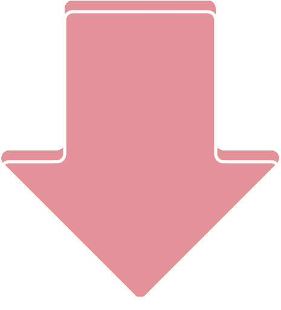
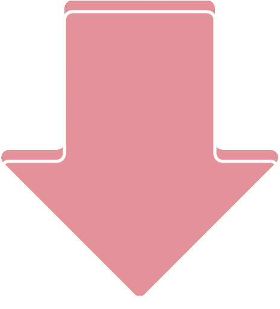

Welcome to the Internet!!
This is Olenka's website for CART211.
Image credits: Facebook @ read01.tw

Image credits: Facebook @ read01.tw
If I was part of the government before the 1970s, I probably wouldn't have done much different from what happened in history (by reason of war at the time). However, if I was just any citizen, I would use it to communicate and familiarize with
people from other parts of the world. To be realistic, the Great Man Theory is most likely not possible. Therefore, I would be more likely to be successful in a team. To begin, I would gather a group of individuals who are motivated to
experiment on this journey with me. Next, in order to carry out this idea, I would write out a proposal to the government to fund for this project. If not, another method is to get acces to institutional funds or with charity support.
Over many years of using the internet, I have learned that the best knowledge comes from observing and critically thinking about different people and their cultures. To do so, an open-source communication will certainly allow more people to
access others and build a better understanding as to why things are the way they are. Understanding is a valuable skill to have as a human being, because it becomes essential for the survival of humans.
If I was hired to re-design the network infrastructure of my country, my proposed course of action would be to allow equal internet access to everyone. No matter where you are in the world, it should be a basic human right to have access to the internet. Restricting the use of internet among individuals would limit their knowledge of the world around them, which would manipulate their freedom to live their own lives to the fullest. Speaking about equality brings me further into the issue of slavery, which occurs from coltan mining in the Democratic Republic of Congo. The reality of such toxic working conditions is a violation to human rights and rises environmental concerns, which means that those slaves will suffer from a poor quality of life, even death. So, in such cases, I would go to the extent to ensure safety working conditions such as providing better mining tools in addition to a fair income for the workers.